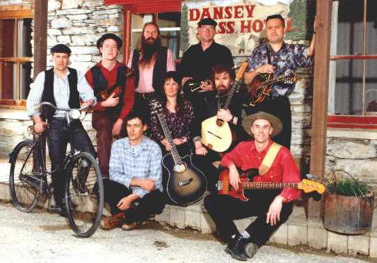
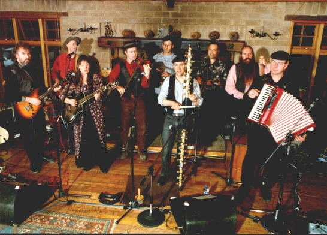
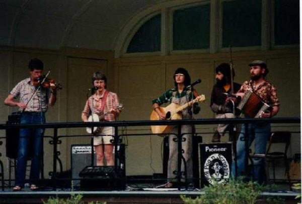
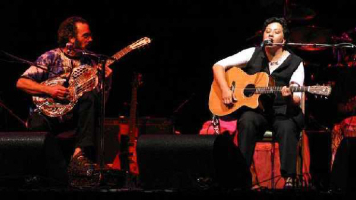

HOME
ARTISTS
CLUBS
FESTIVALS
INSTRUMENTS
LINKS
NZ TOURS
PHOTOS
RESOURCES
SESSIONS
TUNES
UPDATES

Photographs

The Pioneer Pog'n'Scroggin Band, Dansey's Pass, 1998. Back: Bruce Cull,
Tarek Baisley, John Steel, Greg Waite, Mark Laws. Front: Paul Southworth,
Lindsey Shields, Mike Moroney, John Dodd.

The Pioneer Pog'n'Scroggin Band, Dansey's Pass, 1998. Mike Moroney,
John Dodd, Lindsey Shields, Tarek Baysley, Paul Southworth, Bruce Cull,
Mark Laws, John Steel, Greg Waite.

The Pioneer Pog'n'Scroggin Band. Bruce Chapman, Tim Barrie, Carol Boyd,
Brian Boyd, Peter Smart.

Bob Brozman (L) and Mahinaarangi Tocker (R) on stage at WOMAD, New Plymouth, March 2003.